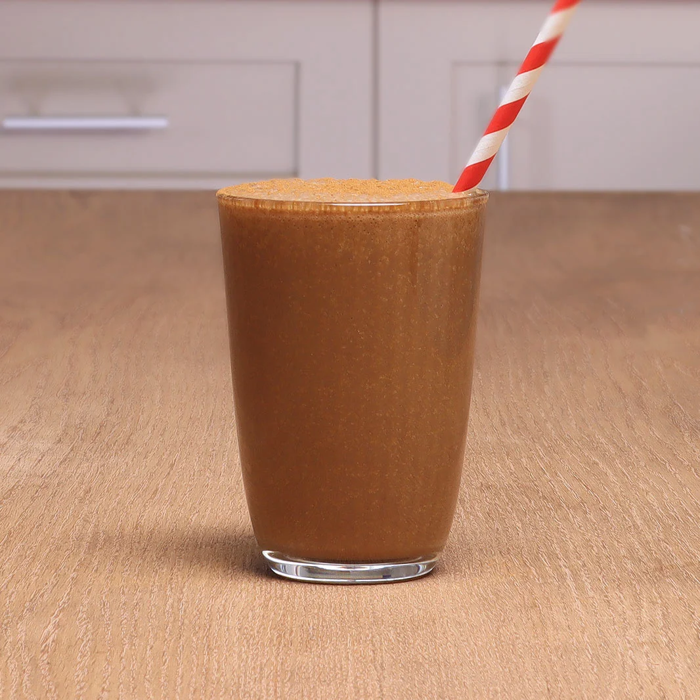

-
-
NESCAFE
네스커피는
매일 마시는 커피 한잔에
당신의 삶을
더 특별하게 만들 수 있는
힘이 있다고 믿습니다.
고품질의 원두,
전문적인 로스팅
- 당신이 좋아하는 모든 NESCAFÉ® 커피에
02
아몬드 카푸치노
남녀노소 좋아하는 견과류 맛

01
단계 5 재료
크리스마스 음료
02
5단계 4재료
식물성
03
5단계 5재료
크리스마스 음료
OUR BUSINESS
커피원두에서 한 잔의 커피까지, 네스카페의 차별성
-
네스카페를 통한
기업가 정신 프로그램NESCAFE는 모두를 위한 커피 창업의 지속적인 지원과
규모 확장을 통해 기업가 정신을 장려합니다. -
-
네스카페와 열대우림
연합 파트너쉽네스카페는 2014년 열대우림 연합과 협력하여
네스카페 Plan 변화의 이론을 공동 개발했습니다. -
-
기후에 탄력적인 농업 지원
네스카페는 농부들이 더욱 효율적으로, 번창하며, 회복력 있고, 지속 가능하도록
트레이닝함으로서 소규모 농부들의 회복력을 지원하는 프로그램을 만들었습니다. -
NEWS
네스카페의 새로운 소식을
전달드립니다.
-
-
-
-
